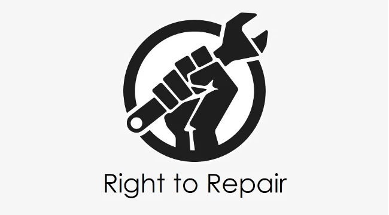

It is the practice of creating products in a way that is designed to make the customer purchase them more often. This can include frequent model changes, limiting the supply of replacement and spare parts, and using less durable materials.
Almost all computing companies practice this to an extent. The most well-known example is that of Apple’s yearly phone releases. Other examples include companies like HP and Microsoft making spare parts to repair their laptops that are hard to get. Making repairs harder is also an example of planned obsolescence. It’s well known that many iPhone models are quite hard to repair, and using non apple parts will make the phone’s software not work correctly in certain cases.
This practice costs us the consumers more money. It also hurts local repair shop businesses when companies make their products hard to repair or make parts hard to find.
When consumers must buy products more often it means more electronic waste will be created. According to the Global E-Waste Statistics Partnership, global e-waste went up by 80 percent from 2010 to 2022. There are many factors contributing to this, but consumers buying products more often due to planned obsolescence is undeniably a major one. The EPA in the U.S. can enforce laws to protect the environment. The environment is a large political issue, making sure we acknowledge planned obsolescence as a contributor to this problem is a key step to moving forward.
The largest example of recent times is the EU mandating that usb-c become the standard port. This forced many companies to change, most notably Apple, who changed their iphone port from lightning to usb-c. Mandating a standardized port makes repairability and part finding easier. Our Congress in the U.S. could implement something similar related to this issue. For example, they could make a law mandating a new standard for electronics, or mandate a certain warranty lenght for certain devices. The way our government is set up it would be the Beuracratic Agencies deciding the specifics and guidelines of these policies and enforcing them. The FTC would be the most important federal agency to this topic as they directly regulate companies and could enforce laws to stop planned obsolescence (FTC). The EPA is another example; when electronics last longer, less waste is created. The EPA could mandate certain life spans for electronic components to protect the environment (EPA). An example of a private organization is the CTA. This group represents many of the relevant major companies and could resist any plans to stop planned obsolescence. (CTA.).
Right now the most impact is being created at the state level. The Right To Repair movement has gained much traction in the last decade and we’re now seeing many states incorporating right to repair laws. According to the NCLS, in 2023, 33 states considered right to repair laws and 4 states enacted them. Laws like these being created at the state level show how important it is for you to vote for your local electors and inform them that you care about this issue. Adjusting your spending habits is another way to make an impact. Try to not buy the new model of something if your current one still works and buy from companies that sell long lasting products with high repairability. Learning how to repair your own products can also help. Ifixit is a company that sells parts and tools to repair your own electronics. They also have a large amount of manuals for specific models. (the color scheme of this website is ifixit's colors). Whether you fix things yourself or take them to a local repair shop you're almost always going to save money versus replacing the product or having it repaired by the manufacturer. It also helps keep minimize e-waste.
On the surface planned obsolescence may sound like an evil thing that corrupt companies do to try and gouge as much money from consumers as possible. But is there more to the story, can this practice have any benefits?
The answer is yes, but only in very specific scenarios. Apple’s cycle of yearly product releases is more than just a ploy to get you to buy the new one every year. Although the warranties may only last a year (excluding paid insurance), Apple’s software support lasts for multiple years, usually 5 or more. The amount of time from when an iPhone releases to when its software support has ended is usually the same amount of time for the phone’s hardware to become reasonably detiriorated. It’s good for the consumers to have access to a new model with new technologies when they need it. Each consumer will be at a different point in the life cycle of their phone, which means not everyone will need a new phone at the same time.
There is also the argument that planned obsolescence is good for the economy. Obviously it drives up spending and makes large companies more money. Stricter regulations could drive costs up for companies which could make products more expensive.
Some also argue that planned obsolescence isn't as big of an issue as it may seem. Research by Microsoft showed that 80 percent of electronic failures were caused by the customer and only about 20 percent were casued by faulty hardware/software.